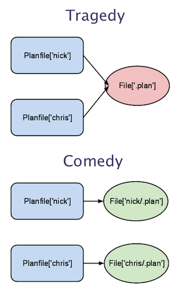

Learning — Defined Types (Modules, Part Three)
Use defined resource types to group basic resources into super-resources.
← Parameterized Classes — Index — TBA →
Beyond Singletons
Classes are good for modeling singleton aspects of a system, but to model repeatable chunks of configuration — like a Git repository or an Apache vhost — you should use defined resource types.
Defined types just act like normal resource types, and are declared in the same way…
apache::vhost {'personal_site':
port => 80,
docroot => '/var/www/personal',
options => 'Indexes MultiViews',
}
…but under the hood, they’re composed of other resources.
Defining a Type
You define a type with the define keyword, and the definition looks almost exactly like a parameterized class. You need:
- A name
- A list of parameters (in parentheses, after the name)
- (Defined types also get a special
$titleparameter without having to declare it, and its value is always set to the title of the resource instance. Classes get this too, but it’s less useful since a class will only ever have one name.)
- (Defined types also get a special
- And a collection of resources.
Like this:
define planfile ($user = $title, $content) {
file {"/home/${user}/.plan":
ensure => file,
content => $content,
mode => 0644,
owner => $user,
require => User[$user],
}
}
user {'nick':
ensure => present,
managehome => true,
uid => 517,
}
planfile {'nick':
content => "Working on new Learning Puppet chapters. Tomorrow: upgrading the LP virtual machine.",
}
This one’s pretty simple. (In fact, it’s basically just a macro.) It has two parameters, one of which is optional (it defaults to the title of the resource), and the collection of resources it declares is just a single file resource.
A quick note: If your VM is running Puppet 2.6.4 (use
puppet --versionto find out), that example won’t work as written, because$titlewas exposed to the parameter list in Puppet 2.6.5. You’ll need to either upgrade the VM to Puppet Enterprise 1.2, or make the$userparameter mandatory by removing the default. You can still use the$titleparameter as a variable inside the definition, though.
Special Little Flowers
So it’s pretty simple, right? Exactly like defining a class? Almost: there’s one extra requirement. Since the user might declare any number of instances of a defined type, you have to make sure that the implementation will never declare the same resource twice.
Consider a slightly different version of that first definition:
define planfile ($user = $title, $content) {
file {'.plan':
path => "/home/${user}/.plan",
ensure => file,
content => $content,
mode => 0644,
owner => $user,
require => User[$user],
}
}
See how the title of the file resource isn’t tied to any of the definition’s parameters?
planfile {'nick':
content => "Working on new Learning Puppet chapters. Tomorrow: upgrading the LP virtual machine.",
}
planfile {'chris':
content => "Resurrecting a very dead laptop.",
}
# puppet apply planfiles.pp
Duplicate definition: File[.plan] is already defined in file /root/manifests/planfile.pp at line 9; cannot redefine at /root/manifests/planfile.pp:9 on node puppet.localdomain
Yikes. You can see where we went wrong — every time we declare an instance of planfile, it’s going to declare the resource File['.plan'], and Puppet will fail compilation if you try to declare the same resource twice.

To avoid this, you have to make sure that both the title and the name (or namevar) of every resource in the definition are somehow derived from a unique parameter (often the $title) of the defined type. (For example, we couldn’t derive the file’s title from the $content of the planfile resource, because more than one user might write the same .plan text.)
If there’s a singleton resource that has to exist for any instance of the defined type to work, you should:
- Put that resource in a class, and…
-
…either use
includeto declare that class in the type definition, or use the following idiom in the definition to make sure it’ll fail without the class:Class['myclass'] -> Defined::Type["$title"]
Defined Types in Modules
Defined types can be autoloaded just like classes, and thus used from anywhere in your manifests. Like with classes, each defined type should go in its own file in a module’s manifests/ directory, and the same rules for namespacing apply. (So the apache::vhost type would go somewhere like /etc/puppetlabs/puppet/modules/apache/manifests/vhost.pp, and if we were to keep the planfile type around, it would go in /etc/puppetlabs/puppet/modules/planfile/manifests/init.pp.)
Resource References and Namespaced Types
You might have already noticed this above, but: when you make a resource reference to an instance of a defined type, you have to capitalize every namespace segment in the type’s name. That means an instance of the foo::bar::baz type would be referenced like Foo::Bar::Baz['mybaz'].
An Example: Apache Vhosts
Not that my .plan macro wasn’t pretty great, but let’s be serious for a minute. Remember your Apache module from a few chapters back? Let’s extend it so we can easily declare vhosts. (Big thanks to the ops team here at Puppet Labs, from whom I borrowed this code.)
# Definition: apache::vhost
#
# This class installs Apache Virtual Hosts
#
# Parameters:
# - The $port to configure the host on
# - The $docroot provides the DocumentationRoot variable
# - The $template option specifies whether to use the default template or override
# - The $priority of the site
# - The $serveraliases of the site
# - The $options for the given vhost
# - The $vhost_name for name based virtualhosting, defaulting to *
#
# Actions:
# - Install Apache Virtual Hosts
#
# Requires:
# - The apache class
#
# Sample Usage:
# apache::vhost { 'site.name.fqdn':
# priority => '20',
# port => '80',
# docroot => '/path/to/docroot',
# }
#
define apache::vhost(
$port,
$docroot,
$template = 'apache/vhost-default.conf.erb',
$priority = '25',
$servername = '',
$serveraliases = '',
$options = "Indexes FollowSymLinks MultiViews",
$vhost_name = '*'
) {
include apache
# Below is a pre-2.6.5 idiom for having a parameter default to the title,
# but you could also just declare $servername = "$title" in the parameters
# list and change srvname to servername in the template.
if $servername == '' {
$srvname = $title
} else {
$srvname = $servername
}
case $operatingsystem {
'centos', 'redhat', 'fedora': { $vdir = '/etc/httpd/conf.d'
$logdir = '/var/log/httpd'}
'ubuntu', 'debian': { $vdir = '/etc/apache2/sites-enabled'
$logdir = '/var/log/apache2'}
default: { $vdir = '/etc/apache2/sites-enabled'
$logdir = '/var/log/apache2'}
}
file {
"${vdir}/${priority}-${name}.conf":
content => template($template),
owner => 'root',
group => 'root',
mode => '755',
require => Package['httpd'],
notify => Service['httpd'],
}
}
# /etc/puppetlabs/modules/apache/templates/vhost-default.conf.erb
# ************************************
# Default template in module puppetlabs-apache
# Managed by Puppet
# ************************************
Listen <%= port %>
NameVirtualHost <%= vhost_name %>:<%= port %>
<VirtualHost <%= vhost_name %>:<%= port %>>
ServerName <%= srvname %>
<% if serveraliases.is_a? Array -%>
<% serveraliases.each do |name| -%><%= " ServerAlias #{name}\n" %><% end -%>
<% elsif serveraliases != '' -%>
<%= " ServerAlias #{serveraliases}" -%>
<% end -%>
DocumentRoot <%= docroot %>
<Directory <%= docroot %>>
Options <%= options %>
AllowOverride None
Order allow,deny
allow from all
</Directory>
ErrorLog <%= logdir %>/<%= name %>_error.log
LogLevel warn
CustomLog <%= logdir %>/<%= name %>_access.log combined
ServerSignature Off
</VirtualHost>
And that’s more or less a wrap. You can apply a manifest like this:
apache::vhost {'testhost':
port => 8081,
docroot => '/var/www-testhost',
priority => 25,
servername => 'puppet',
}
…and (as long as the directory exists) you’ll immediately be able to reach the new vhost:
# curl http://puppet:8081
In a way, this is just slightly more sophisticated than the first example — it’s still only one file resource — but the use of a template makes it a LOT more powerful, and you can already see how much time it can save. And you can make it slicker as you build more types: once you’ve got a custom type that handles firewall rules, for example, you can add something like this to the definition:
firewall {"0100-INPUT ACCEPT $port":
jump => 'ACCEPT',
dport => "$port",
proto => 'tcp'
}
Exercises
Take a minute to make a few more defined types, just to get used to modeling repeatable groups of resources.
- Try wrapping a
userresource in ahuman::usertype that automatically grabs that person’s .bashrc file from yoursitemodule and manages one or moressh_authorized_keyresources for their account. - If you’re familiar with git, take a stab at writing a
git::repotype that can clone from a repository on the network (and maybe even keep the working copy up-to-date on a specific branch!). This’ll be harder — you’ll probably have to make agitclass to make sure git is available, and you’ll have to use at least onefile(ensure => directory) and at least oneexecresource.
One Last Tip
Defined types take input, and input can get a little dirty — you might want to check your parameters to make sure they’re the correct data type, and fail early if they’re garbage instead of writing undefined stuff to the system.
If you’re going to make a practice of validating your inputs (hint: DO), you can save yourself a lot of effort by using the validation functions in Puppet Labs’ stdlib module. We ship a version of stdlib with PE 1.2, and you can also download it for free at either GitHub and the module forge. The functions are:
validate_arrayvalidate_boolvalidate_hashvalidate_revalidate_string
You can learn how to use these by running puppet doc --reference function | less on a system that has stdlib installed in its modulepath, or you can read the documentation directly in each of the functions’ files — look in the lib/puppet/parser/functions directory of the module.
Next
Okay. There’s more to say about modules — we still haven’t covered data separation, patterns for making your modules more readable, or module composition yet — but there’s more important business afoot. Come back next time for master/agent Puppet!